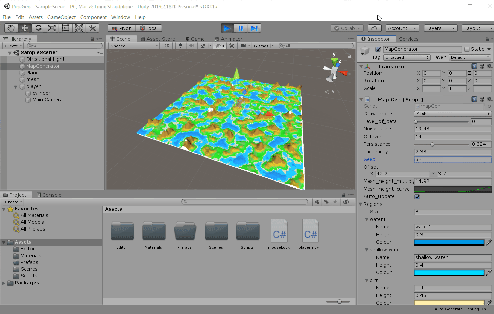

Contacts and Prototyping (9/23/2020)

For this week, I reached out (and got some responses!) to 5 stakeholders to discuss procedural generation research. In addition, I used several tutorials on procedural generation algorithms to make a prototype to get a rough idea of what this project's final deliverable will be.
Access most recent webbuild here: Click Link
Crafting Personalized Emails for potential stakeholders. (2 Hours)
With the list of the five stakeholders I found last week, I began to make personalized messages to reach out to them. In these messages (4-5 sentences) I stated the purpose of my research and asked each stakeholder for a brief interview (phone or virtual). A key component of these messages was personalization: in each message, I mentioned how I came across the stakeholder (whether it be a blog post or word of mouth), and what I stood to gain from their advice. By doing this, I hoped to maximize my chances of getting a response back. Within 2 hours, 2 of the stakeholders reached out to me! One of them sent me a few additional resources on the procedural technology they used in a recent AAA title. The other agreed to speak to me via discord tomorrow (Thursday).
Prototype (4 hours)
With my remaining time this week, I developed a quick prototype for my project. It is a simple procedurally generated landmass developed in Unity and C# which can be heavily customized via the editor:  My initial idea for this tool is that it will allow a developer to specify information about a 3D level they want to create (such as Seed, Custom Perlin Noise), and the tool will automatically generate the level for them. Below, I will break down how this prototype works.
Perlin Noise
As the basis of the landmass, I first developed a perlin noise generator. Perlin Noise is an algorithm
that generates psuedo-random numbers:
 The issue with using pure randomness for procedural generation is that it is not guaranteed to generate numbers that are related to each other. Without a discernible pattern, it is difficult to control the quality of what our algorithm produces. However, with Perlin noise, we can generate numbers on a smooth curve,
leading to more impactful results:
Each curve generate by perlin noise can be described with an amplitude (height on the y axis) and a frequency
(width on the x-axis):
We call variations of these noise curves octaves. By layering octaves on each other, we can create unique curve patterns for our geometry. Moreover, "lacunarity" can be used to increase the frequency of the octaves,
and "persistence" can be utilized to decrease the amplitude of the octaves. We need these two variables to the octaves increase in detail as they are added together. Moreover, we want to ensure that that previous
octave layers are not influenced by the next ones to be added (leading to uniqueness in the result):
The issue with using pure randomness for procedural generation is that it is not guaranteed to generate numbers that are related to each other. Without a discernible pattern, it is difficult to control the quality of what our algorithm produces. However, with Perlin noise, we can generate numbers on a smooth curve,
leading to more impactful results:
Each curve generate by perlin noise can be described with an amplitude (height on the y axis) and a frequency
(width on the x-axis):
We call variations of these noise curves octaves. By layering octaves on each other, we can create unique curve patterns for our geometry. Moreover, "lacunarity" can be used to increase the frequency of the octaves,
and "persistence" can be utilized to decrease the amplitude of the octaves. We need these two variables to the octaves increase in detail as they are added together. Moreover, we want to ensure that that previous
octave layers are not influenced by the next ones to be added (leading to uniqueness in the result):
Color and Mesh
After building customizable plane with perlin noise, we can start to add color and meshes to the plane. Using texture2D and Color objects provided by Unity, we can sketch unique patterns on top of the Perlin plane: For meshes, we have to begin thinking of the plane as a grid of verticies: Meshes are a data structure that is composed of triangles. To render them, we have to organize a 2D array of verticies, and connect them together. For every 3 tuple of verticies (i, i+1, i+2), we will draw 3 edges which forms a triangle. Overtall, the final result turned out great: The user can then add additional regions on top of the plane, further customizing its look. I spent some time experiementing with regions, and was able to get a better look for the map: And after rendering the meshes, we start to get a land mass with more detail:
Giving Mesh 3D Appearance
To get the mesh plane pop in 3D, we can simply add a height veriable to are terrain generation script. Now, when noise is generated,
we will render the meshes in the z direction, in addition to x and y. We can also add an option for an animation curve on the mesh, making
the water seem more flat, and the mountains appear more pronounced:
As a final touch, I added an optimization to the mesh generation. Meshes in Unity can only have a certain number of triangles before
performance drops. To mitigate this issue, we can reorganize the triangles into terrain chunks: if we group a range of
vertices from [i to i*2], we can make the plane larger, but reduce the number of triangles drawn significantly (improving
performance):

Final Thoughts
This technical experiment proves that my research idea is possible. There is an abundance of resources for learning procedural generation algorithms. Moreover, engines like Unity and Unreal allow for custom editors; so I can build the tool on top of these engines to decrease development time. For next steps, I need to start thinking of how I can make my project more novel. Right now, there are already tools avaliable for generating land masses automatically. The prototype at the moment does not offer options for adding entites (items of interests, gameplay features, enemies and players) to the level. I need to consider the advice from my stakeholders, as well as the research I discovered last week, to come up with a more creative and useful solution to automating level design
Resources used
- Procedural Terrain Generation Tutorial by Sebastian Lague
- Generating Terrain in Unity by Brackeys
- Procedural Terrain in Unity by Brackeys
- I Made Minecraft in 24 Hours
- 7 uses of procedural generation that all developers should study by Richard Moss
- Noise Derovatoves, going with the flow by Catlike Coding